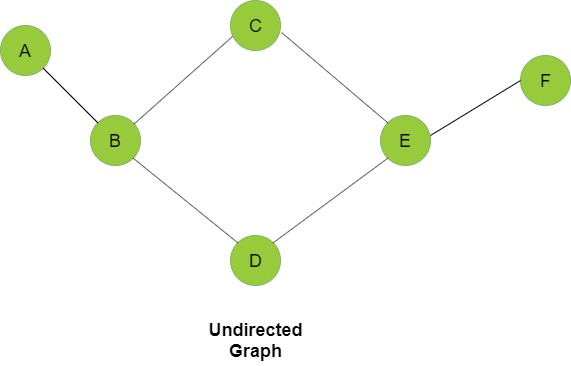
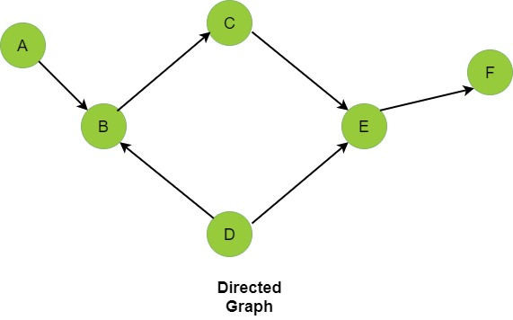

Dijkstra's Algorithm
Graphs
Graphs are mathematical structures that represent pairwise relationships between objects. A graph is a flow structure that represents the relationship between various objects. It can be visualized by using the following two basic components:
- Nodes: These are the most important components in any graph. Nodes are entities whose relationships are expressed using edges. If a graph comprises 2 nodes and an undirected edge between them, then it expresses a bi-directional relationship between the nodes and edge.
- Edges: Edges are the components that are used to represent the relationships between various nodes in a graph. An edge between two nodes expresses a one-way or two-way relationship between the nodes.
Undirected graph
Directed graph
Queues
Queues are data structures that follow the First In First Out (FIFO) i.e. the first element that is added to the queue is the first one to be removed. Elements are always added to the back and removed from the front. Think of it as a line of people waiting for a bus. The person who is at the beginning of the line is the first one to enter the bus. Queues support the following fundamental functions:
- Enqueue: If the queue is not full, this function adds an element to the back of the queue, else it prints "Overflow".
- Dequeue: If the queue is not empty, this function removes the element from the front of the queue, else it prints "Underflow".
- Front: This function returns the front element of the queue.
Functions related to queues
Time and Space Complexity
Time complexity of an algorithm gives the measure of time taken by it to run as a function of the length of the input. Similarly, Space complexity of an algorithm quantifies the amount of space or memory taken by an algorithm to run as a function of the length of the input.
Next